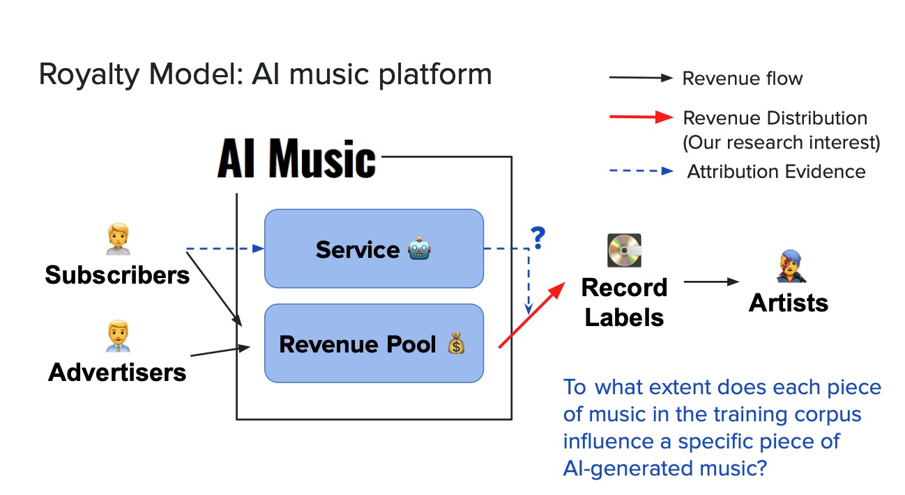
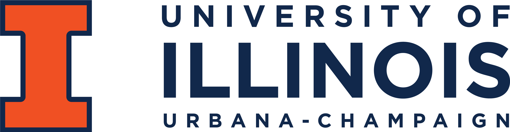

👋 Greatings / 你好 !
📖 I am currently a first-year CS major master’s student at UIUC (2023-Now).
🔬 I am a member of the Trustworthy and Regulatable AI Systems lab, working with Prof. Jiaqi Ma.
🏫 Prior to this, I completed my Bachelor’s degree in Statistics also at the UIUC.
☕️ Additionally, I am a transfer student, having initially studied at XJTLU, which located in a beautiful city Suzhou. If you have any questions about the undergraduate transfer process, I would be happy to share my experience.
I am currently looking for the PhD opportunity on the 2024-2025, looking for the position in CS, Information Science, etc., related to Artificial Intelligence, NLP, and Machine Learning. Please feel free to contact me if you are interested.

Preprint|
 |
The Grainger College of Engineering, Univ of Illinois.
Master in Computer Science.(Aug. 2023 - Now) GPA: 4 / 4 |
|
LAS | College of Liberal Arts & Sciences, Univ of Illinois.
Bachelor of Science in Statistics.(Sept. 2019 - Jun. 2023) GPA: 3.97 / 4 |
Address: 1301 W Springfield Ave, Urbana, IL 61801
Email:
Phone: (217) 377-5722